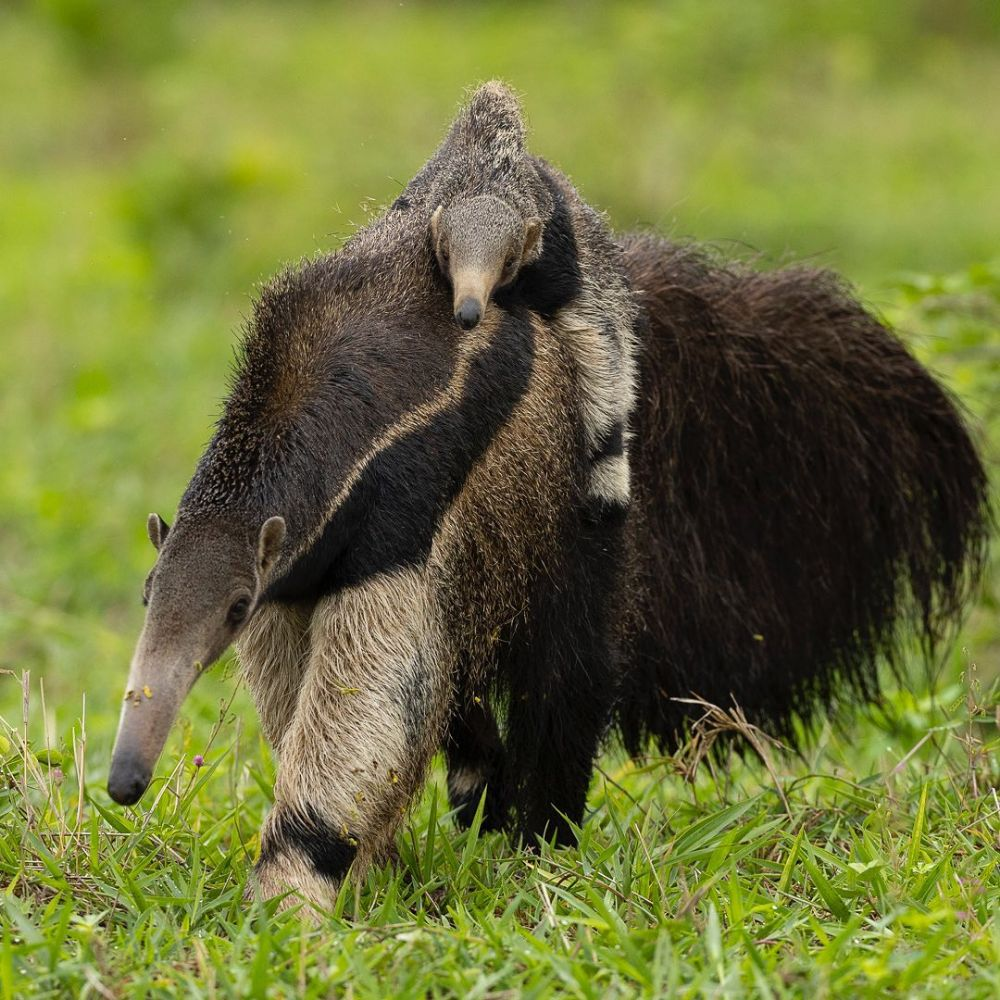

O Brasil abriga uma das maiores biodiversidades do planeta, com espécies únicas que impressionam pela sua beleza. Muitas delas, porém, estão em risco crítico de desaparecer. Conheça nossa fauna e entenda por que precisamos agir agora.
Descubra Mais ↓O Brasil é um dos países com maior biodiversidade do mundo, reunindo uma enorme variedade de espécies em biomas como a Amazônia, o Cerrado e a Mata Atlântica. Essa riqueza natural é o resultado de um longo processo evolutivo e representa um patrimônio ambiental inestimável.
Apesar disso, a destruição dos habitats naturais, a expansão urbana desordenada, a caça ilegal e o tráfico de animais silvestres têm encurralado nossas espécies. Reconhecer a importância da nossa fauna é o primeiro passo para salvar o que ainda nos resta.
Conhecer os Animais